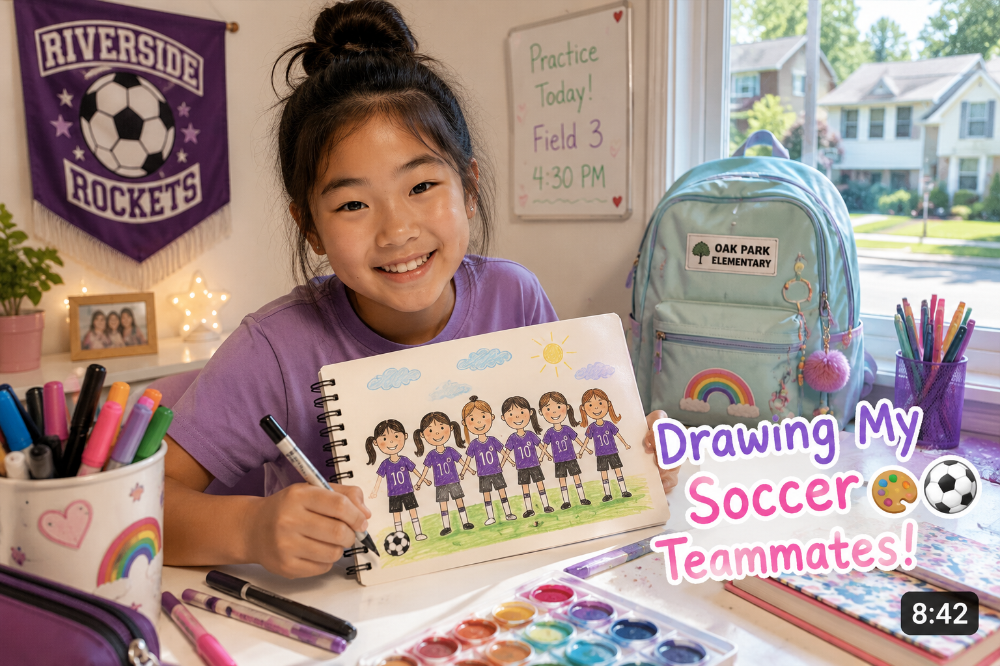
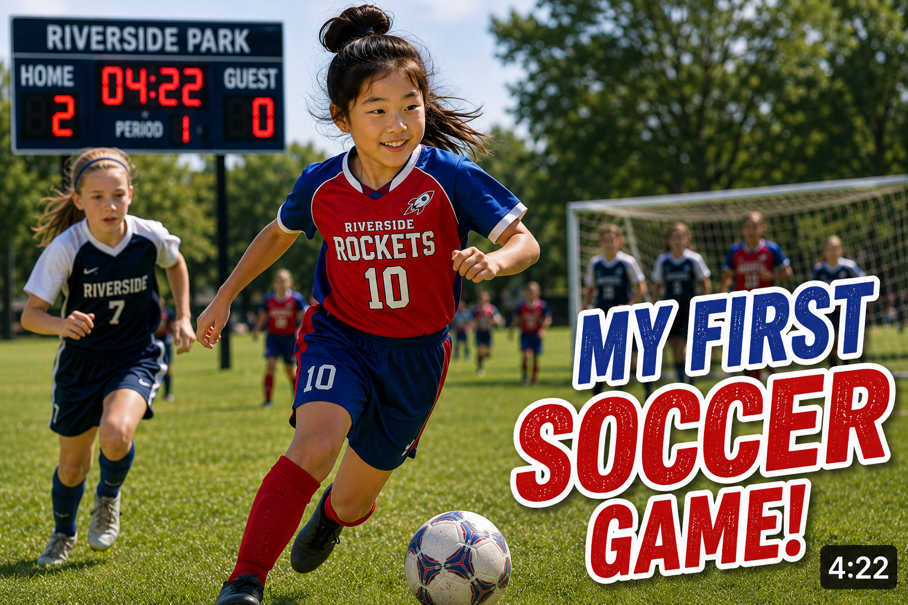
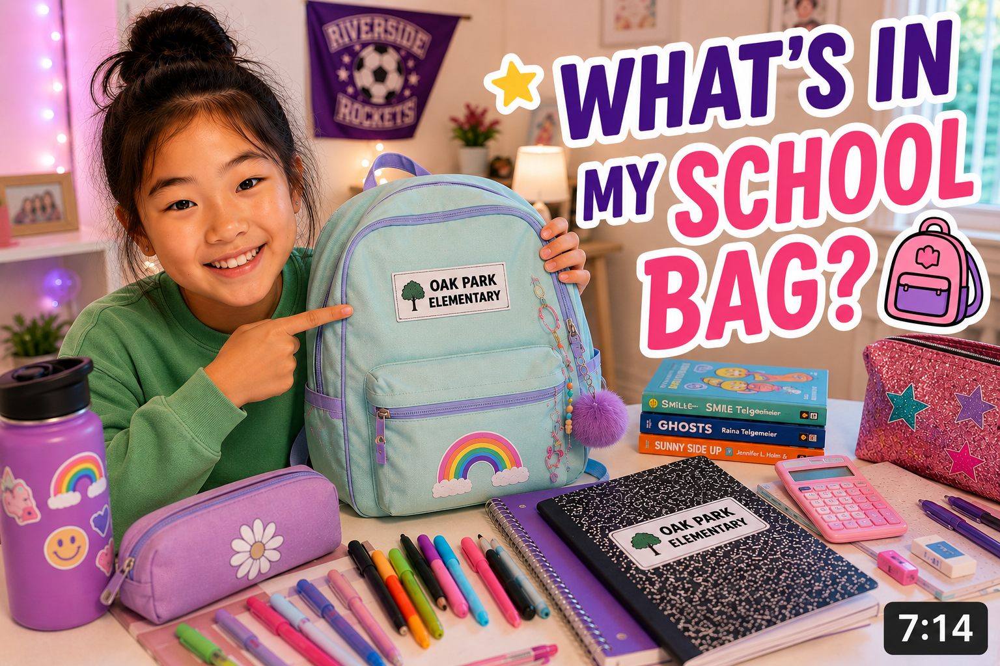
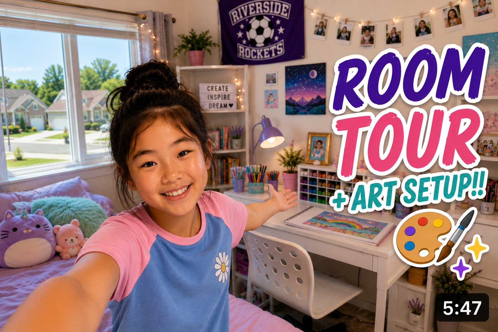

For returning subscribers

8:14Drawing My Soccer Teammates! ⚽🎨
Hey guys!! Welcome back to Lily's Art Corner! Today I'm drawing a few of my Wildcats soccer teammates! Thanks to my Wildcats teammates for helping with today's challenge, especially Mia and Zoe! I had so much fun at practice this week. I don't post exact practice details online, but our team page has the general season info. 😊 😊
I do art videos most Sundays and sometimes during the week after school. I usually film after homework and snack.
Thanks for watching! Like and subscribe!! 💜
I do art videos most Sundays and sometimes during the week after school. I usually film after homework and snack.
Thanks for watching! Like and subscribe!! 💜
Z
ArtLover1337 2 days ago
omg lily your drawings are so cute!! what park do you practice at?? maybe my mom can take me to watch! 🙂 🙂
👍 4 Reply
🎨
Lily's Art Corner 🎨 2 days ago
I should probably not post exact field/time here, but Wildcats families can check the team app! 🎉⚽
👍 2 Reply
S
SoccerFan_Unknown 3 days ago
Love this channel! What school are you at?
Reply
🎨
Lily's Art Corner 🎨 3 days ago
I don't share my school in comments anymore 😊
Reply
M
Zoe_TheDefender 3 days ago
The drawing of Mia looks SO GOOD lol!! See you tomorrow at practice, Mia and Lily! 🎉
👍 7 Reply
Videos

5:42My Soccer Team's First Game!! Wildcats ⚽

6:09What's In My School Bag? 🎒 Middle School Edition

9:31Room Tour + Art Setup!! 🎨✨